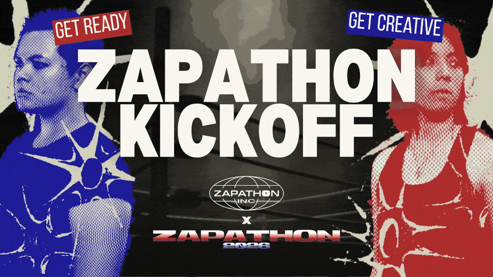
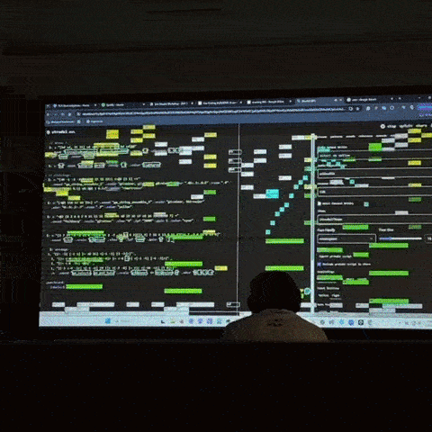
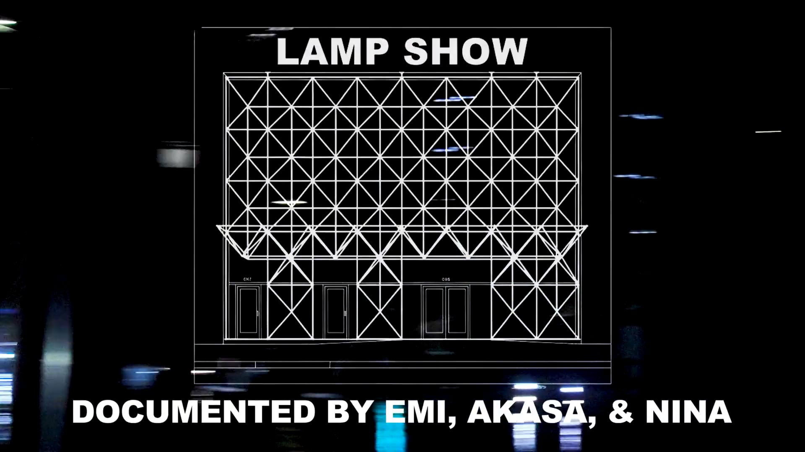

graphic design, community engagement
graphic design, community engagement

creative coding, community engagement
creative coding, community engagement

filmmaking
filmmaking

sound design, creative coding

textile media

motion design

game design

creative coding

creative coding

story development

social media
I am Emi Savage. I am a media artist and undergrad student based in
Los Angeles, CA. By blending emerging technology and sensory experience, I make work that draws you in to the body, the web, and
the things in your backyard. My disciplines include creative code, writing, graphic design, tactile media, and video.
I believe in thorough documentation to make my process and progress accessible to others.
I am currently attending the Media Arts + Practice
program at the University of Southern California. In
my free time, I like to collect CDs and feel the sun on my back.
This portfolio site is open source and
built by hand with p5.js and jQuery.